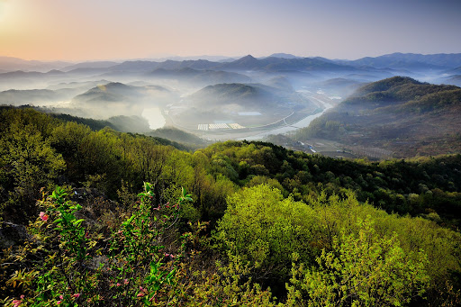
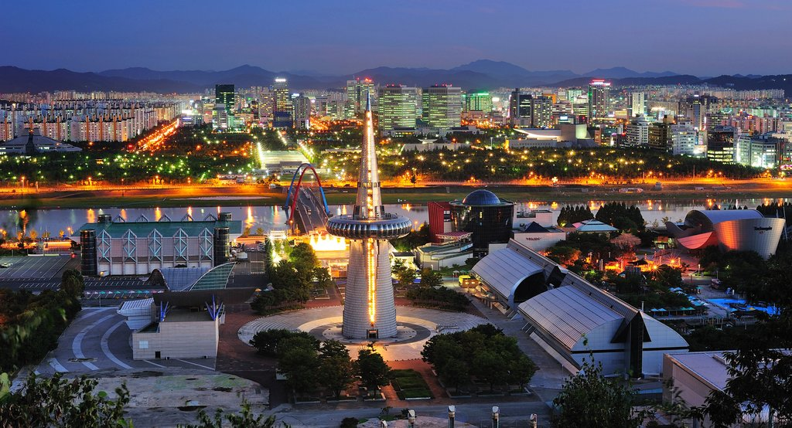
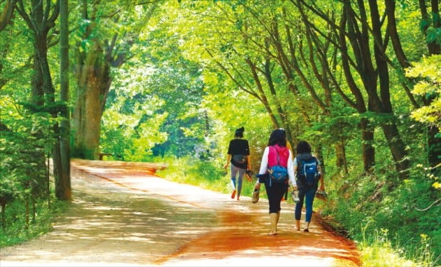
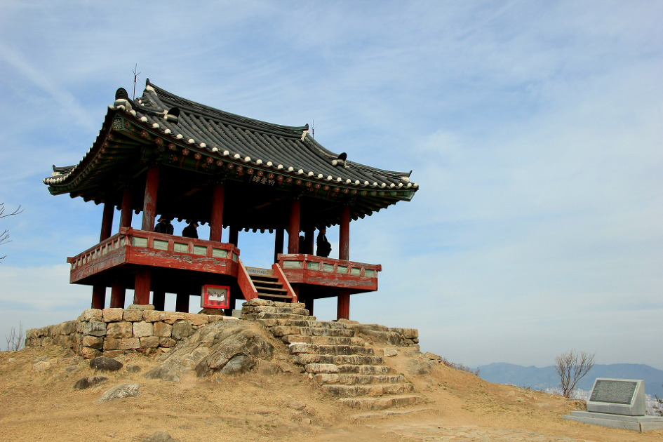
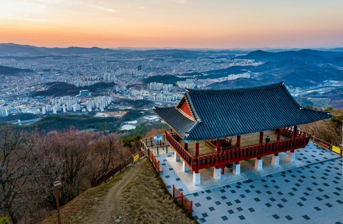
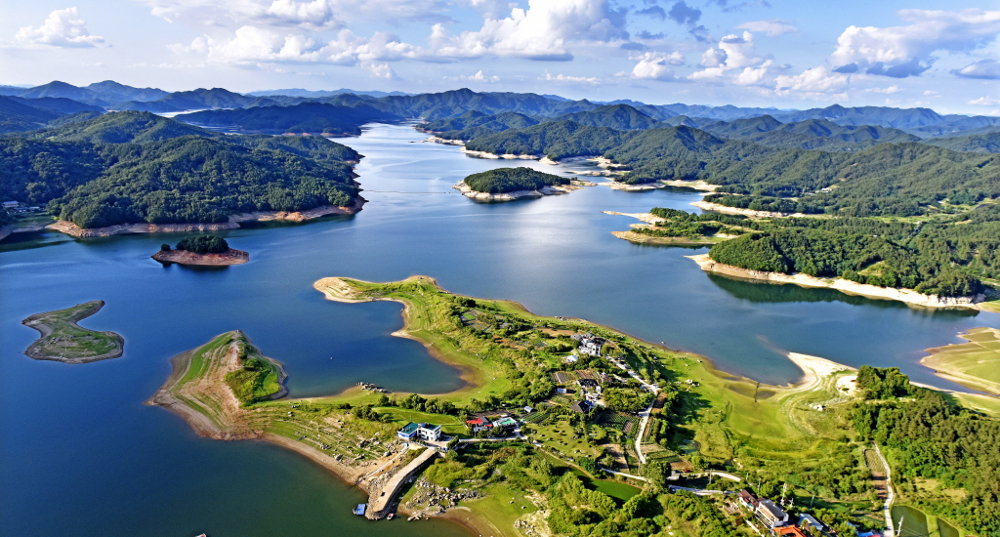
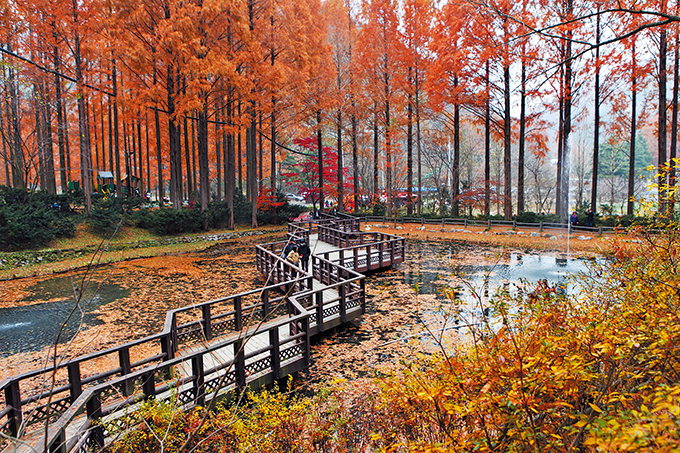
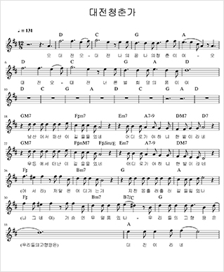

대전소개
문화생활
프로축구
프로야구
아쿠아리움
오월드
기타 공연
자유게시판
로그인
회원가입
< 분야를 선택하세요 >
[역사]
[슬로건]
[대전8경]
[대전노래]
역사
백제의 우술군(雨述郡)이었고, 계족산성이 유적으로 남아 있다.
신라에서 비풍군(比豐郡)으로 고쳤고, 고려에서 회덕현(懷德縣)으로 고쳐 공주목에 속하였다.
조선시대에 공주목(公州牧) 직할의 일부와 회덕현, 진잠현(鎭岑縣)에 속하는 지역이었다. 성리학의 전성기에 박팽년(朴彭年), 송준길(宋浚吉), 송시열(宋時烈), 권시(權諰), 윤휴(尹鑴) 등 기호학파가 활동하였다.
1905년 경부선 대전역이 들어서면서 근대 도시로 발전하기 시작하였고, 1913년에 대전에서 분기하는 호남선 철도가 완공되면서 교통의 중심도시가 되었다.
1914년 회덕군, 진잠군과 공주군 일부를 폐합하여 대전군을 설치하고, 회덕면 읍내리(현 대덕구 읍내동)에 있던 회덕군청을 산내면 대전리(현 동구 중앙동)로 이전하였다.
1932년 충청남도청이 공주에서 대전으로 이전하여 충청남도 행정의 중심이 되었으며, 각종 산업시설이 들어섰다. 1935년 대전읍이 대전부로 승격되어 분리되었고, 대전군은 대덕군으로 개칭하였다.
대한민국 정부 수립 이후 1949년 대전부를 대전시로 개칭하였다. 1950년 한국 전쟁 중 임시 수도로서 역할을 하였다. 교통의 요지였기 때문에 대전 전투가 벌어졌고, 6·25 전란으로 폐허가 되었다.
그러나 피난민이 대전에 정착하고 전후의 복구사업으로 전국 각지의 인구가 유입되었다.
1970년 회덕 분기점에서 갈라지는 경부고속도로와 호남고속도로가 개통되면서 교통 물류의 중심도시로 성장하였다.
1973년부터 대덕연구단지가 개발되어 과학기술 도시로 발전하였다.
1989년 1월 1일 대전시와 대덕군이 통합되어 대전직할시로 승격되었다.
1993년 대한민국 최초의 국제박람회기구 공인 엑스포인 대전 세계박람회를 성공적으로 개최하여 과학도시로서 위상을 확립하였다. 108개 국가, 33개 국제기구, 200여개 기업이 참가하고 약 1450만명의 관람객이 방문했다.
1995년 1월 1일 지방자치제가 실시되면서 대전광역시로 개칭하였다.
1997년 둔산동에 정부대전청사가 설립되어 관세청, 특허청, 통계청, 조달청, 철도청, 중소기업청, 문화재청, 병무청, 산림청 등 10개의 중앙행정기관이 이전되었다.
1998년 대전광역시가 주도하여 국제협력기구인 세계과학도시연합(WTA)을 창설하였다.
1999년 시청이 중구 원도심에서 둔산 신도심으로 이전되었다.
2011년 국제과학비즈니스벨트 거점도시로 지정되었다
[선택탭으로]
슬로건
‘Daejeon is U’ 는 직관적으로 ‘대전이 바로 당신이다’ 라는 의미로, 대전시의 핵심가치가 시민임을 내포한다.
아울러 ‘U’ 는 사람만을 한정하는 것이 아닌 사물, 장소, 자연, 문화 등 대전이 품어왔고 현재 갖고 있으며
앞으로 추구해야할 가치 등을 총 망라하는 무한한 가능성과 상상의 의미까지 담고 있다.
이미지의 on을 통해 '스위치를 켜다'라는 의미를 부여함과 동시에 스마일과 형상화하여 친근함을 강조하였고,
소문자를 활용하여 밝고 친근한 도시이미지를 표현하였다.
슬로건의 블루와 그린은 대전시 상징 마크 색상을 기초로 CI와 연계성을 고려하여,
첨단 과학도시를 지향하는 블루와 친환경 녹색도시를 추구하는 그린을 적용하였다.
[선택탭으로]
대전8경
유성온천휴양지 < 사진을 클릭하면 나무위키로 이동합니다. >

구봉산 < 사진을 클릭하면 나무위키로 이동합니다. >

엑스포 과학공원 < 사진을 클릭하면 나무위키로 이동합니다. >

계족산 < 사진을 클릭하면 나무위키로 이동합니다. >

보문산 < 사진을 클릭하면 나무위키로 이동합니다. >

식장산 < 사진을 클릭하면 나무위키로 이동합니다. >

대청호 < 사진을 클릭하면 나무위키로 이동합니다. >

장태산 < 사진을 클릭하면 나무위키로 이동합니다. >
[선택탭으로]
대전청춘가
 오 대전 오 대전 나의 꿈 나의 청춘이여 오 대전 오 대전 너른벌 희망의 품이여
남산에서 떠난이 길을 물었네 어디로 가야하니 한밭이라네 무등에서 떠난 이 길을 물었네 어디로 가야하니 한밭이라네 (아서라)
저 달은 어디가는가 지친몸 흘러흘러 길을 잃었나 (나그네여) 가슴엔 무얼 품었나 우리들의 고향땅은 (우리들의 고향땅은) 대전이라네
오 대전 오 대전 나의 꿈 나의 청춘이여 오 대전 오 대전 너른벌 희망의 품이여
역전 오가는 발길 끊임이 없고 미래를 향한 불빛 꺼지질 않네 대한의 심장소리 가장가까이 힘차게 울리는 한밭이라네 (아서라)
저 달은 어디가는가 지친몸 흘러흘러 길을 잃었나 (나그네여) 가슴엔 무얼 품었나 우리들의 고향땅은 (우리들의 고향땅은) 대전이라네
오 대전 오 대전 나의 꿈 나의 청춘이여 오 대전 오 대전 너른벌 희망의 품이여 너른벌 희망의 품이여 너른벌 희망의 품이여
[선택탭으로]